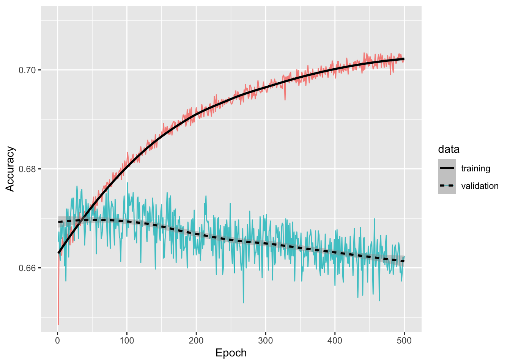
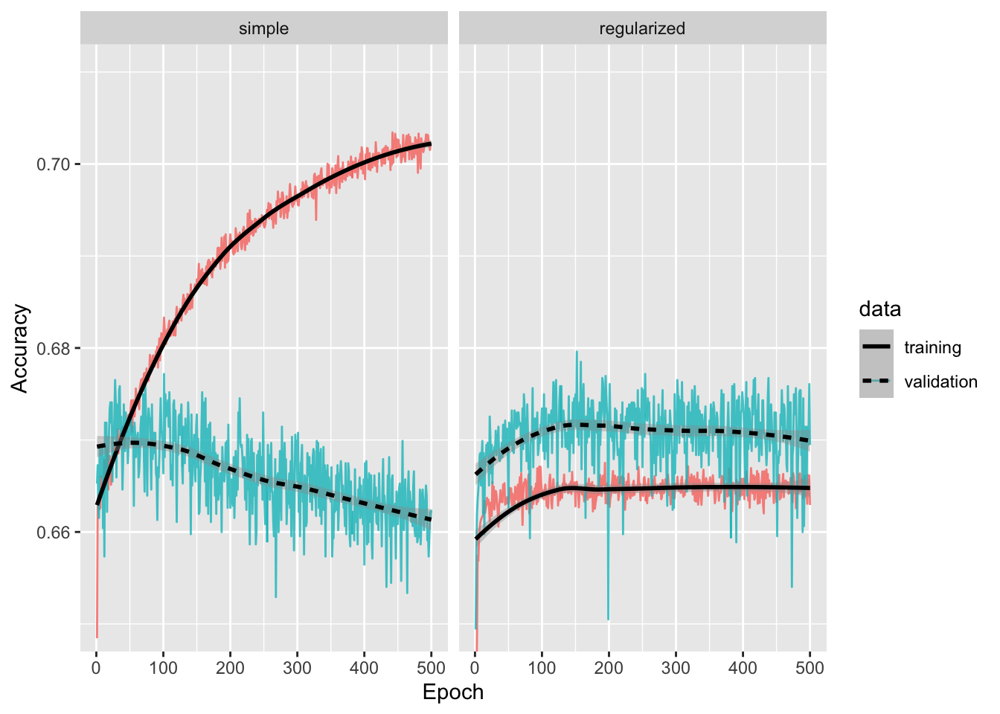
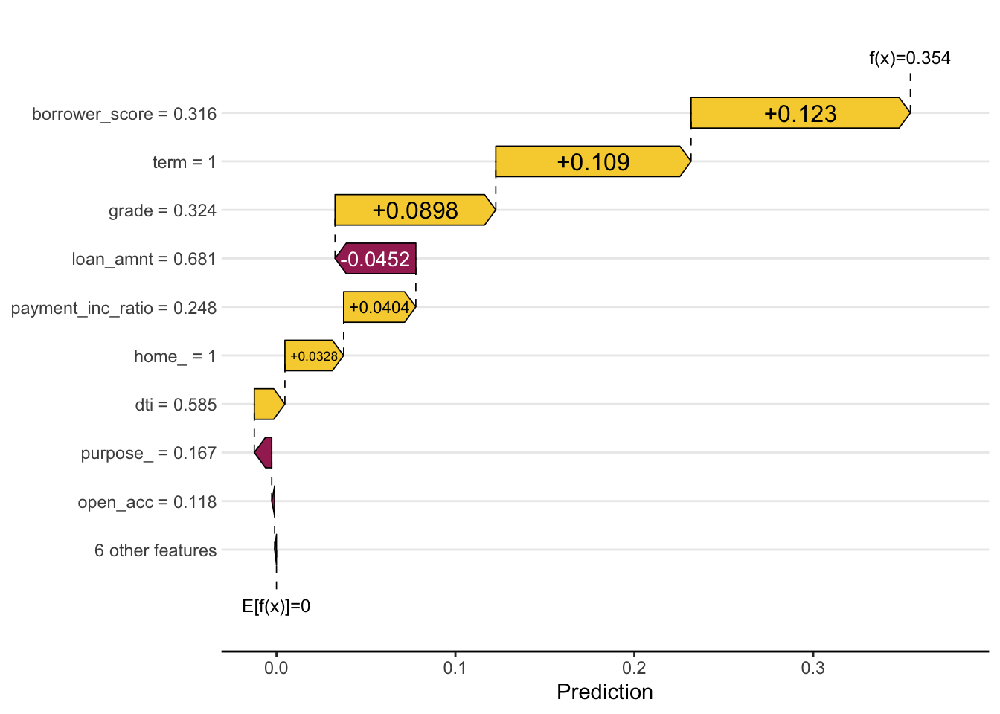
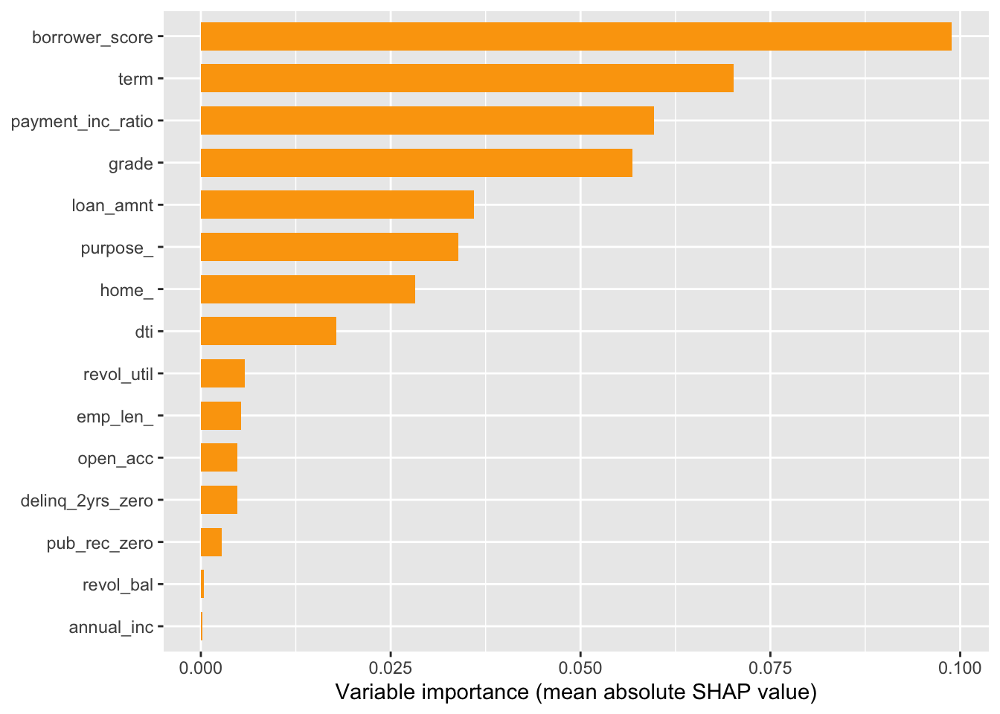

library(fastshap)
library(keras3)
library(shapviz)
library(tensorflow)
library(tidymodels)
library(tidyverse)
set.seed(123)
# Location of the data files. Adjust this path if you keep the data
# files in a different directory.
DATA_DIR <- '../data'Chapter 8: Neural Networks
Neural Networks
Fitting a Network to Data
A Simple Model
loan_data <- read_csv(file.path(DATA_DIR, "loan_data.csv.gz"), show_col_types = FALSE) %>%
dplyr::select(-c(index, status)) %>%
mutate(
across(where(is.character), as.factor),
outcome = factor(outcome, levels = c("paid off", "default")),
across(where(is.factor), as.numeric),
)
formula <- outcome ~ loan_amnt + term + annual_inc + dti + payment_inc_ratio +
revol_bal + revol_util + delinq_2yrs_zero + pub_rec_zero + open_acc +
grade + purpose_ + home_ + emp_len_ + borrower_score
rec <- recipe(formula, data = loan_data) %>%
step_range(all_outcomes(), 0, 1) %>%
step_range(all_predictors(), 0, 1)
xy <- rec %>%
prep() %>%
bake(loan_data)
train_x <- xy %>% select(-outcome) %>% as.matrix()
train_y <- xy %>% select(outcome) %>% as.matrix()simple_model <- keras_model_sequential(input_shape = c(4)) %>%
layer_dense(units = 4, activation = "relu") %>%
layer_dense(units = 2, activation = "relu") %>%
layer_dense(units = 1, activation = "sigmoid")
# Compile the model
simple_model %>% compile(
loss = "binary_crossentropy",
optimizer = optimizer_adam(learning_rate = 0.01),
metrics = c("accuracy")
)
# Fit the model
simple_model %>% fit(
x = train_x[, c("payment_inc_ratio", "purpose_", "dti", "borrower_score")],
y = train_y,
epochs = 100,
batch_size = 128,
verbose = 0,
)Backpropagation and Gradient Descent
Overfitting
set.seed(12345)
n <- nrow(train_x)
indices <- sample(1:n)
train_x <- train_x[indices, ]
train_y <- train_y[indices, ]# Create a two-hidden-layer network using the relu activation function
model <- keras_model_sequential(input_shape = c(15)) %>%
layer_dense(units = 64, activation = "relu") %>%
layer_dense(units = 32, activation = "relu") %>%
layer_dense(units = 1, activation = "sigmoid")
# Compile the model
model %>% compile(
loss = "binary_crossentropy",
optimizer = optimizer_adam(learning_rate = 0.005),
metrics = c("accuracy")
)
# Fit the model using a batch size of 256 and holding out 10% of the data
set.seed(42)
history <- model %>% fit(
x = train_x,
y = train_y,
epochs = 500,
batch_size = 256,
validation_split = 0.1,
verbose = 0,
)
history_df <- as.data.frame(history)ggplot(history_df[history_df$metric == "accuracy", ],
aes(x = epoch, y = value, color = data)) +
geom_line(linewidth = 0.5, alpha = 0.8) +
geom_smooth(aes(linetype = data), method = "loess", formula = "y ~ x",
color = "black") +
labs(x = "Epoch", y = "Accuracy") +
coord_cartesian(ylim = c(0.65, 0.71))
g <- last_plot() +
theme_bw() +
theme(legend.position = "inside", legend.position.inside = c(0.2, 0.9),
legend.title = element_blank())Regularization
reg_model <- keras_model_sequential(input_shape = c(15)) %>%
layer_dense(units = 64, activation = "relu",
kernel_regularizer = regularizer_l2(0.001)) %>%
layer_dropout(0.3) %>%
layer_dense(units = 32, activation = "relu",
kernel_regularizer = regularizer_l2(0.001)) %>%
layer_dropout(0.3) %>%
layer_dense(units = 1, activation = "sigmoid")
reg_model %>% compile(
loss = "binary_crossentropy",
optimizer = optimizer_adam(learning_rate = 0.001),
metrics = c("accuracy")
)
set.seed(42)
history_reg <- reg_model %>% fit(
x = train_x,
y = train_y,
epochs = 500,
batch_size = 256,
validation_split = 0.1,
verbose = 0
)
history_reg_df <- as.data.frame(history_reg)hist_df <- bind_rows(
history_df %>% mutate(method = "simple"),
history_reg_df %>% mutate(method = "regularized"),
) %>%
mutate(method = factor(method, levels = c("simple", "regularized")))
ggplot(hist_df[hist_df$metric == "accuracy", ],
aes(x = epoch, y = value, color = data)) +
geom_line(linewidth = 0.5, alpha = 0.8) +
geom_smooth(aes(linetype = data), method = "loess", formula = "y ~ x",
color = "black") +
labs(x = "Epoch", y = "Accuracy") +
facet_wrap(~ method, ncol = 2) +
coord_cartesian(ylim = c(0.65, 0.71))
g <- last_plot() +
theme_bw(base_size = 15) +
theme(legend.position = "inside", legend.position.inside = c(0.1, 0.85),
legend.title = element_blank())Interpretation and Variable Importance
# Create a prediction wrapper function
predict_function <- function(model, newdata) {
return(as.numeric(predict(model, as.matrix(newdata), verbose = 0)))
}
newdata <- train_x[ceiling(0.9 * n) + 1:100, ]
shap_values <- fastshap::explain(object = reg_model,
X = train_x[1:floor(0.9 * n), ],
pred_wrapper = predict_function,
nsim = 50, # Number of Monte Carlo samples (increase for more accuracy)
newdata = newdata,
)row_id <- 24
newdata[row_id, ] loan_amnt term annual_inc dti
0.681159420 1.000000000 0.009804226 0.584662892
payment_inc_ratio revol_bal revol_util delinq_2yrs_zero
0.247664899 0.021390884 0.525370804 1.000000000
pub_rec_zero open_acc grade purpose_
1.000000000 0.118421053 0.323529412 0.166666667
home_ emp_len_ borrower_score
1.000000000 1.000000000 0.315789474 shap_viz <- shapviz(shap_values, X = newdata)
sv_waterfall(shap_viz, row_id = row_id)
g <- last_plot() + theme_bw()sv_importance(shap_viz) +
labs(x = "Variable importance (mean absolute SHAP value)")